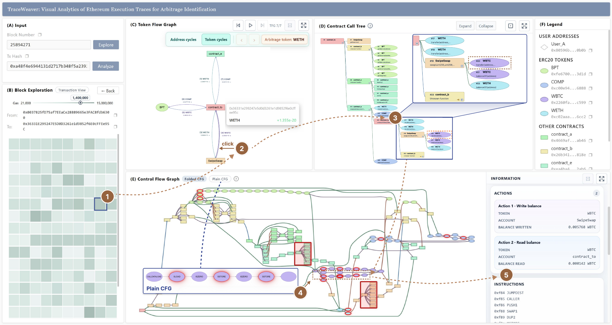

Fudan University
B.Sc. in Data Science and Big Data Technology
GPA: 3.62/4.0 · Third Prize Scholarship of Fudan University · Honorable Mention, COMAP 2026
Expected Jun. 2027
Undergraduate Student in Data Science
Fudan University
I am a final-year undergraduate at the School of Data Science, Fudan University. My research interests include visual analytics, graph algorithms, blockchain systems, and computational finance. I am particularly interested in building methods and interactive systems that help people understand complex computational processes.
I am currently a member of the FDU-VIS Lab. In 2025, I studied at the School of Informatics, University of Edinburgh as an exchange student.
B.Sc. in Data Science and Big Data Technology
GPA: 3.62/4.0 · Third Prize Scholarship of Fudan University · Honorable Mention, COMAP 2026
Expected Jun. 2027
Exchange Student, School of Informatics
Sep.–Dec. 2025

Submitted to the IEEE PacificVis 2027 TVCG Track
We developed TraceWeaver, an interactive visual analytics system that links token-flow graphs, call trees, and control-flow graphs. It enables analysts to trace arbitrage fund flows to specific contract calls and EVM opcodes without relying on source code, ABIs, or event logs.

I implemented query-graph preprocessing to identify reusable substructures during continuous matching, visualized the algorithmic workflow and experimental results, and contributed to manuscript preparation.

Analysis and visualization of whether ERC-8004 forms a functioning agent-to-agent trust network.

Contributed to the public documentation of NFT music, its history, applications, and criticism.

A Solidity auction contract deployed and tested on the Ethereum Sepolia network.


Shanghai Jiayicui Private Fund Management Co., Ltd.
Developed a Transformer–GNN–MLP model for convertible-bond return ranking and built a backtesting framework for empirical evaluation.
May–Aug. 2026
Fudan University · English-taught graduate course
Designed a hands-on Sepolia assignment and supported in-class instruction and final-paper review.
Sep.–Dec. 2026
Fudan University
Coordinated the School's registration and participation in university-wide athletic events.
Sep. 2024–Present
Programming: Python (PyTorch, Polars), SQL, Solidity, C
Tools: Git, LaTeX